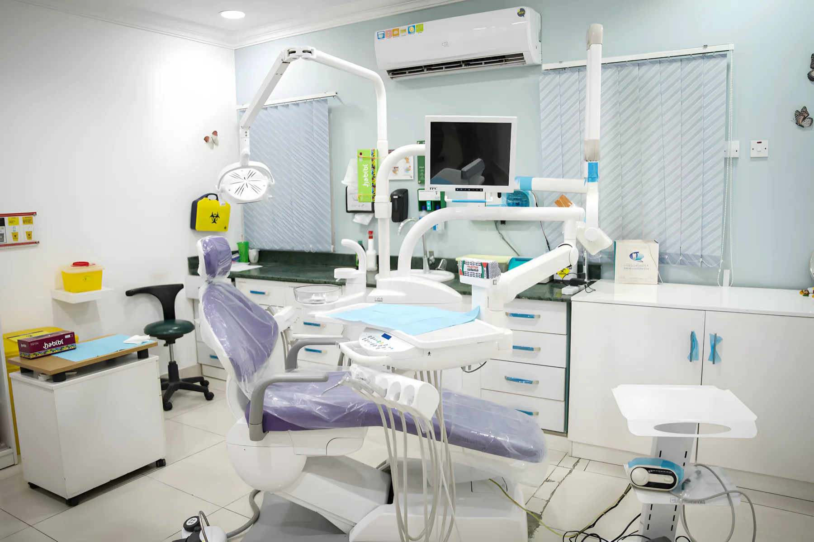
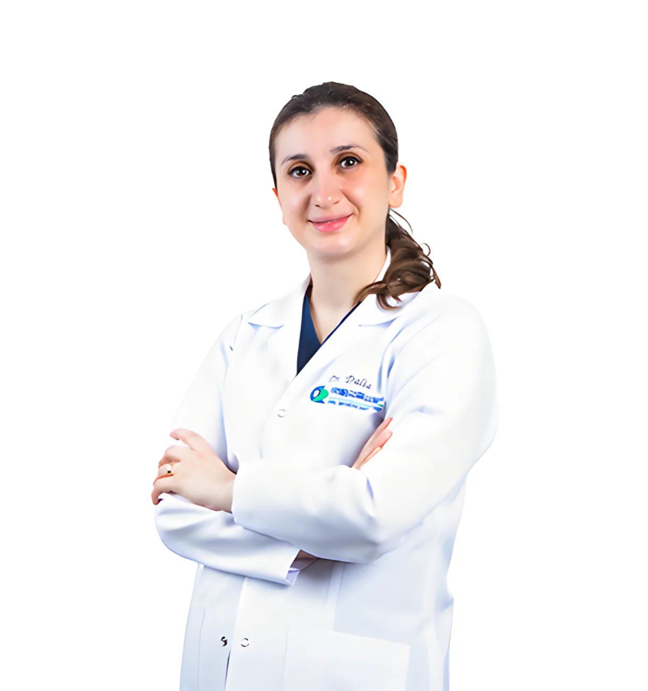
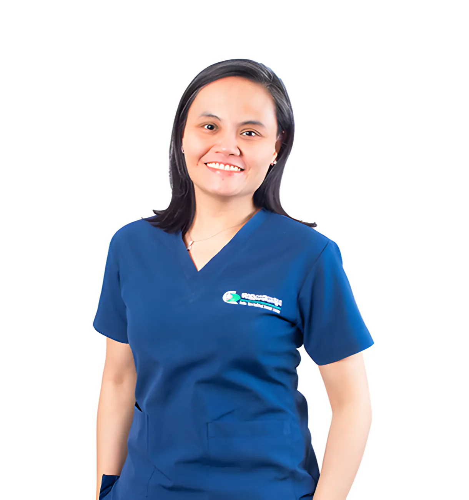
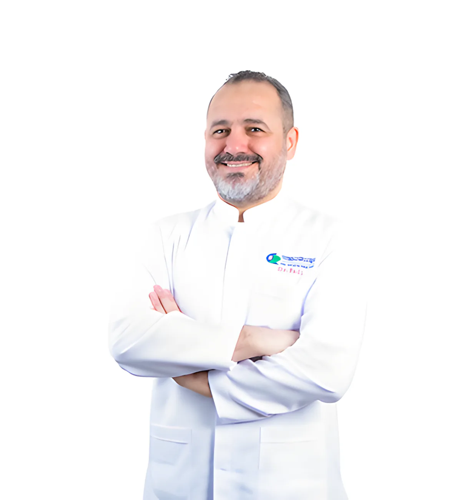
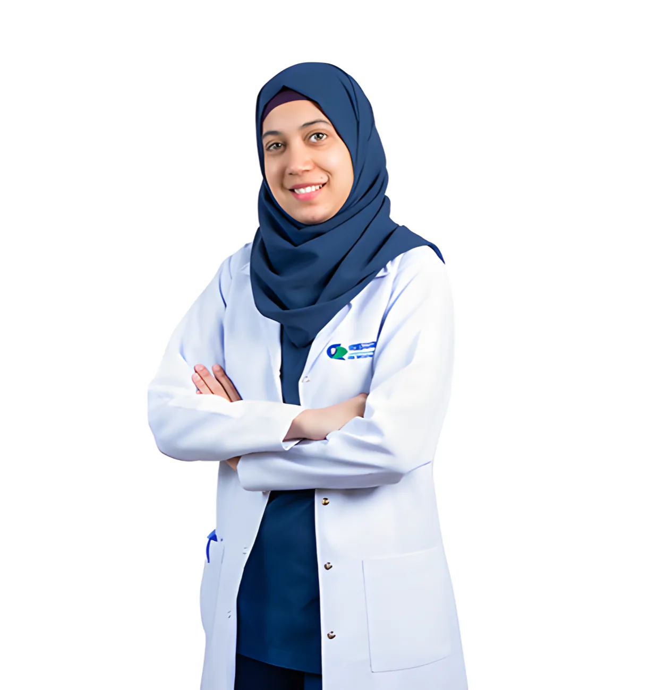
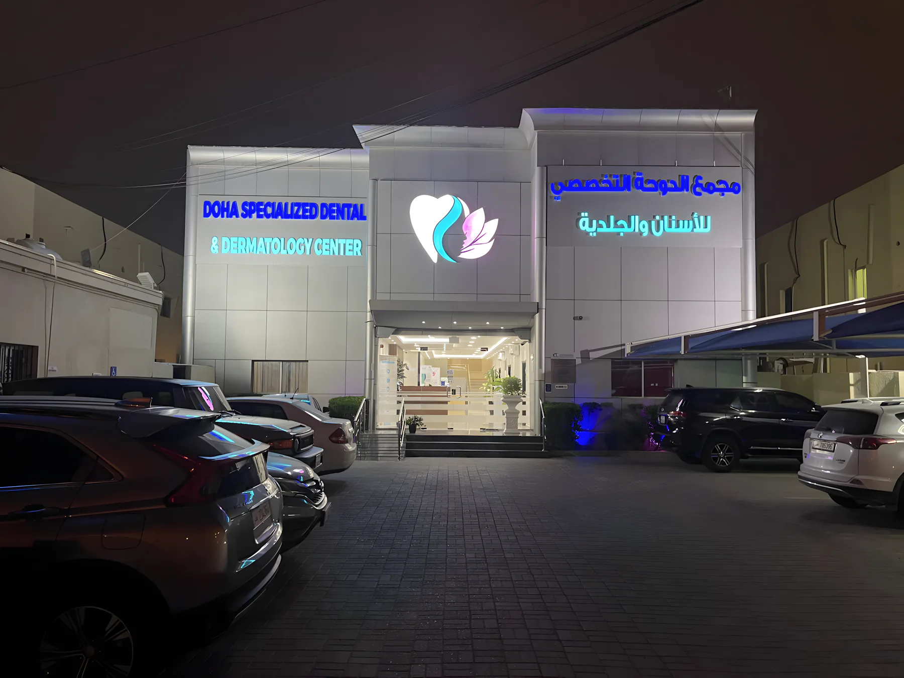
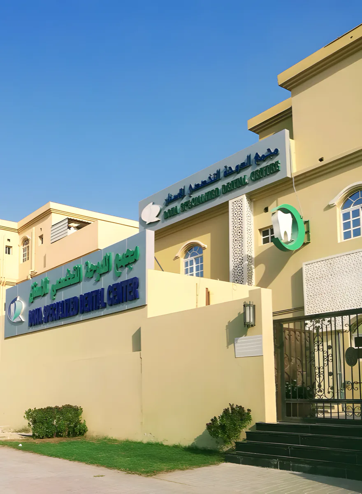
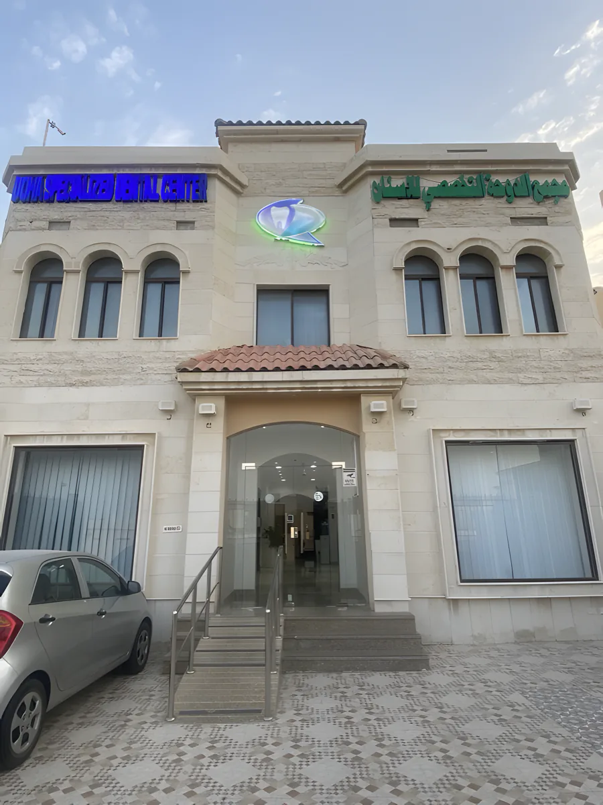

الأسنان الفروع الثلاثة
من الفحص والتنظيف إلى الزراعة والتقويم وعلاج العصب تحت المجهر. لكل علاج أخصائيه: التقويم عند أخصائي التقويم، والزراعة عند جراح الفم، وعلاج الجذور عند أخصائي علاج الجذور.
3 فروع المنتزه، الدوحة · الوكرة · الخريطيات
مفتوح الآن السبت–الخميس 9 ص – 9 م · الجمعة مغلق
للأسنان والجلدية
Doha Specialized Dental & Dermatology Center
أطباء أسنان عامّون، وأخصائيو تقويم وجراحة فم وعلاج جذور، وطبيبة أسنان أطفال، وأخصائية جلدية، في ثلاثة فروع في قطر منذ 2007. أرسل لنا رسالة واتساب ونحجز لك عند الطبيب الذي تختاره.
4.9 على Google من 1,222 تقييمًا لفرع المنتزه







فرعنا في الدوحة على شارع المنتزه فيه القسمان. فرعا الوكرة والخريطيات للأسنان فقط.

من الفحص والتنظيف إلى الزراعة والتقويم وعلاج العصب تحت المجهر. لكل علاج أخصائيه: التقويم عند أخصائي التقويم، والزراعة عند جراح الفم، وعلاج الجذور عند أخصائي علاج الجذور.

أمراض الجلد مثل الإكزيما والصدفية والحساسية، والجانب التجميلي: الليزر والفيلر والتقشير.
الجلدية
اختر المشكلة وشاهد كيف نعالجها عادةً. طبيبة الجلدية تفحص بشرتك أولًا وتقول لك أي علاج يناسبك وكم جلسة تحتاج.
اسأل عيادة الجلدية على واتسابالسنة التي بدأنا فيها علاج المرضى في قطر. واليوم ثلاثة فروع: المنتزه والوكرة والخريطيات.
مريض عالجناهم في عيادات الأسنان والجلدية منذ افتتاحنا.
تقييم على Google من 1,222 مراجعة لفرع المنتزه. الوكرة والخريطيات: 4.8 لكل منهما.خرائط Google، نوفمبر 2026
الأسعار التي نُسأل عنها أكثر. يؤكد لك الطبيب التكلفة الدقيقة بعد الفحص وقبل أن نبدأ.
حسب حجم التسوس.
ترقيع العظم والغشاء الكولاجيني بتكلفة إضافية، فقط إذا احتجت إليهما.
تبييض بليزر Philips، حوالي ساعة ونصف. اسألنا عن العرض الحالي.
حسب المنطقة وعدد الجلسات. ترد عليك عيادة الجلدية بالأسعار على واتساب.
“التعامل فالاستقبال مريح وسريعين و دکتوره جوانا شکرا”
“شغلهم ممتاز”
“Excellent experience, very professional team. Excellent physician, all staff are welcoming and professional. Recommended ++++++.”



| السبت | 9 ص – 9 م |
| الأحد | 9 ص – 9 م |
| الاثنين | 9 ص – 9 م |
| الثلاثاء | 9 ص – 9 م |
| الأربعاء | 9 ص – 9 م |
| الخميس | 9 ص – 9 م |
| الجمعة | مغلق |
اتصل بالفرع على كل حال. إذا كان هناك طبيب في العيادة نعالج الألم الشديد فورًا حتى بعد الإغلاق. ولغير ذلك، أسرع طريقة للحجز رسالة واتساب على +974 5088 5545.